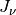
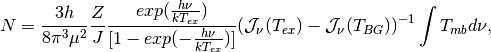
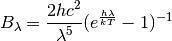
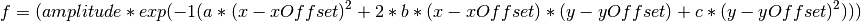
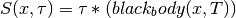
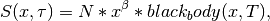

Source Documenation¶
Maps¶
Main¶
-
class
astrolyze.maps.main.Map(map_name, **kwargs)[source] Mapis the parent Class for themaps-package. It contains all functions that are common to all supported map-formats, i.e. Fits, GILDAS and Miriad. This class is only supposed to be called through the FitsMap, GildasMap, and MiriadMap classes.Parameters: map_name (string) – The name and path of the file that is to be initialized to the maps package. -
change_map_name(source=None, telescope=None, species=None, fluxUnit=None, resolution=None, comments=None, dataFormat=False, prefix=None)[source] This function can be used to change the names of the maps and make a copy of the file to the new name and/or location.
-
flux_conversion(x=None, major=None, minor=None, nu_or_lambda='nu', direction=None)[source] Calulates conversion between K.km/s and Jy/beam and vise versa.
Parameters: - x (float [GHz]) – Wavelength/frequency. Defaults to the frequency of the loaded map, i.e. self.frequency
- major (float) – Major Axis Beam (arcsec). Default None, i.e. using self.resolution.
- minor (float) – Minor Axis Beam(arcsec). Default None, i.e. using self.resolution.
- nu_or_lambda (string) – Choose type of x: frequency =
'nu'or wavelength ='lambda'. - direction (string) – choose conversion direction
'kelvin_to_jansky'means Kelvin to Jansky;'jansky_to_kelvin'Jansky to Kelvin.
Notes
If self.frequency and self.resolution are correctly set, this functions does not need any input. Otherwise this has to be given explicitly.
-
get_beam_size()[source] Calculates the beam-size in steradians and in m^2. Fot the latter the distance to the source has to be given.
Returns: - Initialization if the variables
- self.beamSizeSterad and self.beamSizeM2
Notes
The formula used is:
-
resolutionToString(resolution=None)[source] Converts the resolution list to a string to be printed and included in the file names.
-
returnName(source=None, telescope=None, species=None, fluxUnit=None, resolution=None, comments=None, dataFormat=False, prefix=None)[source] Returns the Name corresponding to the Name convention. Single keywords can be changed.
This function is useful to generate a writeout name for a changed file without overwriting the current
self.map_name.Parameters: - possible parameters from the "Naming Convention" plus the new (All) –
- prefix. –
-
FitsMap¶
-
class
astrolyze.maps.fits.FitsMap(map_name)[source] Fits Map manipulation making extensive use of the pyfits package.
-
change_unit(final_unit, frequency=None, debug=False)[source] Changes the unit of a map
Parameters: - final_unit (string) –
The unit to change the map to. Possible are:
- Jy/beam:
"JyB""JyBeam" - Jy/pixel:
"JyP","JyPix","JyPixel" - MJy/sterad:
"MJyPsr","MJPSR","MJy/sr" - Main Beam Temperature:
"Tmb","T","Kkms" - erg/s/pixel:
"ergs""ERGPSECPPIX","ERGPSECPPIXEL","ERG-S-1-Pixel","ERG-S-1" - erg/s/beam:
"ERGPSECPBEAM" - erg/s/sterad
"ERGPERSTER"
- Jy/beam:
- frequency (float) – Can be used if self.frequency is NaN. The frequency (in GHz) is needed for conversions between temperature and Jansky/Erg scale. Other conversions don’t need it.
Notes
Warning
This function is still in development and not all conversions may work properly.
- final_unit (string) –
-
gauss_factor(beamConv, beamOrig=None, dx1=None, dy1=None)[source] Calculates the scaling factor to be applied after convolving a map in Jy/beam with a gaussian to get fluxes in Jy/beam again.
This function is a copy of the FORTRAN gaufac function from the Miriad package, which determine the Gaussian parameters resulting from convolving two gaussians. This function yields the same result as the MIRIAD gaufac function.
Parameters: - beamConv (list) – A list of the [major axis, minor axis, position_angle] of the gaussion used for convolution.
- beamOrig – Same format as beamConv but giving the parameters of the original beam of the map. As Default the self.resolution list is used.
- dy1 (dx1,) – Being the pixel size in both dimensions of the map.
By default the
CDELT1andCDELT2keywords from the fits header are used.
Returns: - fac – Factor for the output Units.
- amp – Amplitude of resultant gaussian.
- bmaj, bmin – Major and minor axes of resultant gaussian.
- bpa – Position angle of the resulting gaussian.
-
get_pixel_size()[source] Calculates the Area of a pixel in m^2 and steradians if distance is given. If not only steradians are calculated.
-
pix2sky(pixel, degrees_or_equatorial='degrees')[source] Calculates the Coordinates of a given Pixel.
Parameters: - pixel (list) – Pixel of the map; [x, y].
- degrees_or_equatorial (string) – Either
"degrees"or"equatorial". Choosing the Format of the coordintates to be returnes. Defaults to"degrees".
Returns: coordinate – The coordinates corresponding to pixel. Either in Degrees or in Equatorial coordinates, depending on the parameter degrees_or_equatorial.
Return type: list
-
read_aperture(position, apertureSize=0, backgroundSize=0, output=False, annotation=False, newAnnotation=False)[source] Extract the sum and mean flux inside an aperture of a given size and at a given position..
This function can be used to read the flux in the area of a circular aperture, as well as to correct for the background flux.
Parameters: - position (list) –
The position in RA,DEC where the aperture is to be applied. The Format has to be either:
- [‘RA’,’DEC’] with strings representing equatorial coordinates, e.g. [‘01:34:32.8’, ‘+30:47:00.6’].
or:
- [RA, DEC] where RA and DEC being the coordinates in Grad.
- apertureSize (float [arcsec]) – The diameter of the aperture to be applied.
- backgroundSize (float [arcsec]) – The Size of the Anulli in which the background is to be estimated. The number to be given here correspond to the diameter of the circle in [arcsec ] descibing the outer border of the annuli, measured from the position given in position. Thus, the background is measurd in the ring described by apertureSize and backgroundSize. Default is 0 and thus no background substaction is applied.
- output (True or False) – If True the function reports the calculated values during execution.
- annotion (logical) – If True a kvis annotation file
"apertures.ann"containing the aperture used to integrate the flux is created. Default is False, i.e. not to create the aperture. - newAnnotation (logical) – If True
"apertures.ann"is overwritten. If False an old"apertures.ann"is used to append the new apertures. If it not exists a new one is created. The latter is the default.
Returns: List
Return type: [Sum, Mean, Number of pixels]
Notes
The pixel sizes have to be quadratic for the algorithm to work. It measures a circle by counting the pixels from the central pixel corresponding to the given coordinate.
- position (list) –
-
read_flux(position)[source] Returns the value of the pixel that corresponds to the given positions of RA, DEC (J2000) in units of equatorial coordinates or degrees.
Parameters: position (list) – The position in RA,DEC where the aperture is to be applied. The Format has to be either:
- [‘RA’,’DEC’] with strings representing equatorial coordinates, e.g. [‘01:34:32.8’, ‘+30:47:00.6’].
or:
- [RA, DEC] where RA and DEC being the coordinates in Grad.
Returns: flux – The flux at the given position. Return type: float See also
sky2pix(),astFunc.equatorial_to_degrees(),wcs.wcs_sky2pix()
-
sky2pix(coordinate, origin=0)[source] Calculates the Pixel corresponding to a given coordinate.
Parameters: - coordinate (list) – Either [‘RA’,’DEC’], e.g. [‘1:34:7.00’, ‘+30:47:52.00’] in equatorial coordinates or [RA, DEC] in GRAD.
- origin (int) –
0or1; this steers how the first pixel is counted0is for usage with python as it starts to count from zero.1is the fits standart.
Returns: pixel – [x, y]; the pixel coordinates of the map.
Return type: List
-
toGildas(prefix=None)[source] Changes the current map to the Gildas Format.
The function takes changes to the map_name variables made outside of functions into account via
astrolyze.maps.main.Map.returnName()into account.Parameters: prefix (string or None) – Path to location where the new gildas file will be stored. The default is None which defaults to the current self.prefix. Examples
To continue working with the gildas map use:
>>> map = map.toGildas()
To only store the current map in the gildas format and go on working with the fits file use:
>>> map.toGildas()
Here map is an Instance of the FitsMap class.
-
toMiriad(prefix=None)[source] Changes the current map to the Miriad Format.
The function takes changes to the map_name variables made outside of functions into account via
maps.main.Map.returnName()into account.Parameters: prefix (string or None) – Path to location where the new gildas file will be stored. The default is None which defaults to the current self.prefix. Examples
This function works like
maps.mapClassFits.FitsMap.toGildas()and the same Examples apply.
-
update_file(backup=False)[source] Writing changes to the self.data and/or self.header to the current file.
Parameters: - backup (True or False) – If True a copy of the original file is created having the extension
"_old"after the file endind, i.e. some_name.fits -> some_name. fits_old. - Returns –
- -------- –
- FitsMap (Instance) –
Notes
If all variables that define the map name () are unchanged the current file is overwritten else
- backup (True or False) – If True a copy of the original file is created having the extension
-
GildasMap¶
-
class
astrolyze.maps.gildas.GildasMap(map_name)[source] Wrapping GILDAS functions to use them inline with Python.
-
custom_go_spectrum(coordinate=False, size=False, angle=0)[source] This function uses the
go spectrumcommand from GREG to plot the spectra in a region given bysizearound the cooridinate given bycoordinate.Parameters: - coordinate (list) – A list with the coordinates in floats in units of Degrees, or in
string for equatorial coordinates. Default to
Falsewhich means that the center of the map, determined from the map header, is used. - size (list) – The region around the
coordinatefrom which spectra are plotted in arcsec, e.g. size = [50, 50] means a region of 50x50 arcsec around the given cooridnate. Defaults to None, which translates to size = [0, 0] which in turn is interpreted as the full map size by GREG. - angle (float [degrees]) – Needed if the map is rotated to get the correct offsets. Defaults to 0.
- coordinate (list) – A list with the coordinates in floats in units of Degrees, or in
string for equatorial coordinates. Default to
-
goRot(angle, prefix=None)[source] Wrapper for the GREG go rot command, which rotates maps around their central coordinate stored in the header.
Parameters: - angle (float [deg]) – Rotation angle.
- prefix (string) – The path where the output is to be stored if different from the current prefix of the map.
Returns: GildasMap Object
Return type: Instance for the reprojected map.
Examples
>>> map.goRot(45)
To change the central coordinate first use
maps.gildas.GildasMap.reproject()e.g.:>>> map = map.reproject(coord=['new_RA_string','new_DEC_string']) >>> map.goRot(45)
-
lmv(fileout=None, prefix=None)[source] Wrapper for the lmv command of GILDAS/CLASS. Extracts spectra from a spectral cube.
Parameters: - fileout (string) – The name of the class file to write the spectra to. Defaults to the map_name with .30m ending.
- prefix (string) – The path were the class file will be stores. Defaults to the current path.
-
mask(polygon, prefix=None)[source] Wrapper for the GREG task mask:
Parameters: - polygon (string) – path to a GILDAS polygon file with ending
".pol" - prefix (string) – The path where the output is to be stored if different from the current prefix of the map.
Returns: mapObject
Return type: The masked map object.
Examples
>>> map.mask('poly/sourceA.pol')
- polygon (string) – path to a GILDAS polygon file with ending
-
moments(velo_range=[0, 0], threshold=0, smooth='YES', prefix=None, comment=None)[source] Wraps the GILDAS/GREG task moments.
Creates the first three moments of the map.
Parameters: - velo_range (list) – Velocity range for the integration.
- threshold (float) – Value under which pixels are blanked.
- smooth (string) – One of Either
"NO"or"YES". Controls if the map is smoothed in velocity before applying the cut threshold. Getting rid of noise peaks over the threshold. Defaults to'YES' - prefix (string) – The path where the output is to be stored if different from the current prefix of the map.
- comment (string) – Optional comments to be added to the new map name.
Returns: mean – The zeroth moment, i.e. the integrated intensity, is returned as a GildasMap object.
Return type: MapObject
-
quick_preview(save=False, filename=None, window=True)[source] Plotting the map and optionally save the figure.
Parameters: - save (True or False) – Choose wether or nor to save the figure.
- filename (string) – The filename to for the saved plot. If None defaults to
'quick_preview.eps'. - window (True or False) – Choose whether the image display is opened or not. Default True.
-
reproject(template=None, coord=None, prefix=None, keep_pixsize=False)[source] Wraps the GREG task reproject. Either use template or coord.
Parameters: - template (string) – Full path to a map in GDF Format whose central coordinate and pixel size will serve as a template.
- coord (list) – List of coordinate strings in RA DEC (J2000) that will become the new centre of the map.
- prefix (string) – The path where the output is to be stored if different from the current prefix of the map. If None the current self.prefix of the GildasMap instance is used.
- keep_pixsize (bool) – If False reproject guesses the new pixel sizes after reprojection these are normally smaller than the original ones. If True the old pixel sizes are enforced.
Returns: GildasMap Object
Return type: Instance for the reprojected map.
Raises: SystemExit– If both template and coord are notNone.ValueError– If keep_pixsize is not a boolean.
Examples
>>> map.reproject(coord = ['1:34:32.8', '30:47:00.6']) >>> map.reproject(template = 'M33_SPIRE_250_JyB_18.1.gdf')
References
For more information on the Gildas task see: .. [1] www.iram.fr/GILDAS/
-
save_figure(name=None)[source] Helper function that saves the current plot.
-
set_defaults()[source] Reset all selection criteria.
-
slice(coordinate1, coordinate2, prefix=None, comment=None)[source] Wrapper for the GREG task slice. Producing Position velocity cuts trough a map between coordinate1 and coordinate2.
Parameters: - coordinate1 (string) – The coordinate where the cut trough the map starts.
- coordinate2 (string) – The coordinate where the cut trough the map ends.
Returns: Return type: A GildasMap object containing the slice.
Notes
This only works with cubes.
-
smooth(new_resolution, old_resolution=None, prefix=None)[source] Wrapper for the GILDAS/GREG task gauss_smooth.
Parameters: - new_resolution (float or list) –
The resulting resolution after the smoothing. It can be:
- a float: i.e. the final major and minor beamsize. The position angle will default to 0.
- a list with two floats: [major_axis, minor_axis]. The position angle defaults to 0.
- a list with three floats: [major_axis, minor_axis, position_angle].
- old_resolution (float or list) – Same format as new_resolution. Defaults to self.resolution of the map instance.
- prefix (string) – The path where the output is to be stored if different from the current prefix of the map.
Notes
Warning
The gauss_smooth Task from GILDAS only gives correct output units when the map is on a temperature or “per pixel” scale. Maps in Jy/Beam won’t be in Jy/Beam after smoothing.
- new_resolution (float or list) –
-
spectrum(coordinate, fileout=None, prefix=None, create_spectrum=True)[source] Wrapper to the GILDAS/GREG spectrum command.
Extracting a spectrum from a cube at a given positions. By default it also creates a 30m file readable by class from the table.
Parameters: - coordinate (list) – A list with the coordinates in floats in units of Degrees, or in string for equatorial coordinate.
- fileout (string) – The name of the table where the spectrum will be stored.
Default is the same name as the map with
".tab"as ending. - prefix – The path to the folder where the newly created file will be stored. Defaults to the prefix currently stored in self.prefix.
- create_spectrum (True or False) – Turn the creation of a 30m with the spectrum of
Falseor onTrue.
Examples
>>> from astrolyze.maps import * >>> map = GildasMap('M33_PdBI_12co10_Tmb_22.0_2kms.gdf') >>> coordinate = ['1:34:7.00', '+30:47:52.00'] >>> map.spectrum(coordinate)
Creates M33_PdBI_12co10_Tmb_22.0_2kms.tab in the present folder.
-
toFits()[source] Converts the actual map to a Fits map.
Returns: Return type: FitsMap Object. Examples
With:
>>> map = gildasMap('M33_MIPS_24mum_JyB_5.gdf') >>> map = map.toFits()
it is possible to continue working with the fits map, using the
maps.fits.FitsMapclass.
-
toMiriad()[source] Converts the actual map to a Miriad map.
Returns: Return type: MiriadMap Object. Examples
With:
>>> map = gildasMap('M33_MIPS_24mum_JyB_5.gdf') >>> map = map.toMiriad()
it is possible to continue working with the Miriad map, using
maps.miriad.MiriadMapclass.
-
MiriadMap¶
-
class
astrolyze.maps.miriad.MiriadMap(map_name)[source] -
smooth(new_resolution, old_resolution=None, scale='')[source] Smoothes a miriad map to the new resolution.
Parameters: - new_resolution (float or list) –
The resolution in of the smoothed image. Can be a:
- float: Output beam has same major and minor axis [arcsec] and the position angle (PA) [degrees] is 0.
- A list with two entries: The major and minor axis. PA is 0. E.g. [major_axis, minor_axis ]
- A list with three entries: [major_axis, minor_axis, PA]
- old_resolution (float) – If None the self.resolution information is taken into account. Otherwise, it is assumed that old_resolution is the actual resolution of the map.
- scale (string) – If unset (scale=’‘), the miriad function will attempt to make the
units of the smoothed image be Jy/beam for Gaussian convolution. If
0.0, then the convolution integral is scaled (multipled) by the inverse of the volume of the convolving function. Otherwise, the integral is scaled by “scale”
Returns: MiriadMap – The smoothed image.
Return type: object
Notes
The function used to calculate the fwhm (Omega) of the convolving Gaussian for both major and minor axis is:
- new_resolution (float or list) –
-
toFits()[source] Converts the actual map to a Fits map.
Returns: Return type: FitsMap Object. Examples
With:
>>> map = miriadMap('M33_MIPS_24mum_JyB_5') >>> map = map.toFits()
it is possible to continue working with the Fits map, using
maps.fits.FitsMapclass.
-
toGildas()[source] Converts the actual map to a Gildas map.
Returns: Return type: GildasMap Object. Examples
With:
>>> map = miriadMap('M33_MIPS_24mum_JyB_5') >>> map = map.toGildas()
it is possible to continue working with the Fits map, using
maps.gildas.GildasMapclass.
-
toMiriad()[source] Copies the actual map changing the name such that it takes changes in keywords into account.
Returns: Return type: MiriadMap Object. Examples
With:
>>> map = miriadMap('M33_MIPS_24mum_JyB_5') >>> map = map.toMiriad()
it is possible to continue working with the Miriad map, using
maps.gildas.MiriadMapclass.
-
Stack¶
-
class
astrolyze.maps.stack.Stack(folder, data_format=None)[source] Class to work with several maps at once.
Allows to treat all images inside a folder simultaneously. This allows to to perform the same transformations on all maps.
The images in the input folder can have arbitrary formats, units, resolutions and other properties. The Stack class can help to unify the different parameters of the maps to help comparing them.
Parameters: - folder (str) – The folder containing the images that are to be treated as a stack
- data_format (str) – If not None filter images by format.
Examples
The stack class can be used like builtin objects that are iterable e.g.:
>>> st = Stack("folder_name") >>> list_map_names = [i.map_name for i in st]
Note
Stack is also the basis for the
astrolyze.sed.Sedpackage.-
copy_structure(old_prefix, new_prefix)[source] Copies a folder structure from old_prefix to new_prefix. To assure all folders exists before working with or copying data.
Parameters: - list (list) – A list containing the relative or absolute paths to files.
- old_prefix (string) – The old path to the folder structure that has to be copied. Has to actually appear in all the strings in list.
- new_prefix (string) – The path to where the folder structure is to be copied.
Notes
This is useful if one is working on many files stored in several sub-folders retrieved using
get_list().Examples
Say the folder structure is like this
>>> ls ../modified/ co10/ co21/ >>> ls ../modfied/co10/ map1/ map2/ >>> ls ../modified/co21/ map1/ map2/
This can be copied to say ../even_more_modified by doing as follows:
>>> from astrolyze.maptools import * >>> list = maptools.get_list(../modified) >>> maptools.copy_structure(list, old_prefix='../modified', >>> new_prefix='../even_more_modified')
-
get_list(data_format=None, depth=False)[source] Loading a list of files in all sub-folders.
Parameters: - folder (string) – The path to the folder that has to be parsed.
- data_format (string) – Search for specific files containing the string, e.g. ‘.fits’
- depth (integer) – The steps into the sub-folder system. Defaults to maximum depth.
Returns: - final_list (array) – Array with the string to the files in the folder and sub folders.
- folder_list – Array with the strings to the folders. Only if depth is set.
-
get_map_format(map_name)[source] This function creates returns the correct
GildasMap,FitsMaporMiriadMapobject without that the data format of the map has to be given.Parameters: map_name (string) – Path and name of the input map. Returns: - Either a
GildasMap,FitsMapor ``MiriadMap` Either a Mapclass object depending on the data format of the input map.
- Either a
-
pixel_pixel_compare(folder=None, plot=False, tol=1000000.0)[source] Producing a pixel-to-pixel comparison for all combinations possible between the maps of the stack.
Parameters: - folder (string) – Path to the folder where the text files with the pixel to pixel comparisons are stored
- plot ([True | False]) – Decides whether to produce pixel-to-pixel plots directly.
- tol (float) –
The tolerance for the maximum difference between the values of the pixel of two compared maps. Default to 1e6.
returns: - Created text files in the specified folders that contain two columns
- with the pixel-to-pixel comparisons. These can be used
-
unify_dimensions(template=None, folder=None)[source] Reproject all maps to the same central coordinates and map dimensions. All properties of one template map are copied to all the other maps using the
"reproject"task of GILDAS.Parameters: - template (string) – Path to the map that will serve as a template, it may be one of the input maps of the stack.
- folder (string) – Path to the folder where the output maps are stored.
-
unify_formats(target_format='fits', folder=None)[source] Converts all maps to the
target_formatwhich has to be one that is known to astrolyze. Please see TODO for a list of kwon formats. Default is fits.Parameters: - target_format (string) – The format to which all maps are converted.
- folder (string) – Path to the folder where the new maps are stored.
If
Nonethe current folder will be used.
-
unify_projections(coordinate=None, angle=None, folder=None)[source] Changing the central coordinate and the rotation angle.
-
unify_resolutions(folder=None, resolution=False)[source] Smoothing all maps to the same resolution; either the maximum resolution found in the stack or a given resolution.
Parameters: - resolution (float or list) –
This may be either:
- A list with three entries, i.e. [[minor_fwhm], [major_fwhm], [position_angle]]
- A list with two entries, position_angle defaults to 0, i.e. [[minor_fwhm], [major_fwhm]]
- A float. Same minor, major fwhm pa=0
- folder (string) – The path tot the folder in which the files are to be stored.
Notes
The position angle of the output images is fixed to
Zeroand can currently not be modified.Depending on the map units different scaling normalizations have to be used after smoothing such that the output units are correct. This function tries to deduce the scaling by itself based on the unit that is given in the map name. Be sure that this is correct otherwise the flux values may be wrong in the output images.
- resolution (float or list) –
-
unify_units(unit='JyB', folder=None, debug=True)[source] Change all maps in the stack to the same unit.
Parameters: - unit (string) – See
astrolyze.maps.fits.FitsMap.change_units()for details. - folder (string) – The target folder. By default the maps are put into their current folder.
- unit (string) – See
Tools¶
-
astrolyze.maps.tools.copy_structure(list, old_prefix, new_prefix)[source] Copies a folder structure from old_prefix to new_prefix. To assure all folders exists before working with or copying data.
Parameters: - list (list) – A list containing the relative or absolute paths to files.
- old_prefix (string) – The old path to the folder structure that has to be copied. Has to actually appear in all the strings in list.
- new_prefix (string) – The path to where the folder structure is to be copied.
Notes
This is usefull if one is working on many files stored in several sub-folders retrieved using
get_list().Examples
Say the folder structure is like this
>>> ls ../modified/ co10/ co21/ >>> ls ../modfied/co10/ map1/ map2/ >>> ls ../modified/co21/ map1/ map2/
This can be copied to say ../even_more_modified by doing as follows:
>>> from astrolyze.maptools import * >>> list = maptools.get_list(../modified) >>> maptools.copy_structure(list, old_prefix='../modified', >>> new_prefix='../even_more_modified')
-
astrolyze.maps.tools.get_list(folder, data_format=None, depth=False)[source] Loading a list of files in all subfolders.
Parameters: - folder (string) – The path to the folder that has to be parsed.
- data_format (string) – Search for specific files containing the string, e.g. ‘.fits’
- depth (integer) – The steps into the subfolder system. Defaults to maximum depth.
Returns: - final_list (array) – Array with the string to the files in the folder and sub folders.
- folder_list – Array with the strings to the folders. Only if depth is set.
-
astrolyze.maps.tools.unifyMaps(list, tinMap, folder='reg')[source] changes the dimensions and pixel sizes off all maps to that of a template map.
-
astrolyze.maps.tools.unifyResolution(liste, resolution=False, folder='smooth', scaling='')[source] Approved.
-
astrolyze.maps.tools.unifyUnits(list, folder='units')[source] NOT READY YET!
Spectra¶
-
class
astrolyze.spectra.class_.ClassSpectra(map_name, nameConvention=True)[source] Provides some usefull automated functions to work on Class Spectra in an convenient way.
Examples
Extracting a spectra at a given position from a spectral cube can be done as follows
>>> from astrolyze.spectra import * >>> >>> cube = ClassSpectra(filename) >>> coordinate = ['1:34:7.00', '+30:47:52.00'] >>> cube.get_spectra_from_cube(coordinate) Generates a 30m file with comment extract in the actual cube.prefix path.
-
get_average_spectrum(prefix=None)[source] Averages all spectra in a cube.
Parameters: prefix (string) – The new path where the averaged spectrum will be stored. Notes
So far no selection is made so the files of the input file have to be consistent.
-
get_region_from_cube(coordinate, angle=0, prefix=None, accuracy=10)[source] The same as :py:func:
get_spectra_from_cubebut returns all spectra found inside a circular region arounf coordinate and in a radius of accuracy arcsec. (“set match “‘accuracy’)
-
get_spectra_from_cube(coordinate, angle=0, prefix=None, accuracy=2, region=False)[source] Extracts one spectra at the position of coordinates from a spectral cube.
Parameters: - coordinate (list) – Equatorial coordinates, e.g. [‘1:34:7.00’, ‘+30:47:52.00’]
- angle (float) – If the cube was rotated before the angle has to be specified to calculate the correct offset.
- prefix (string) – The new path where the averaged spectrum will be stored.
- accuracy (float) – The tolerance in arcsec to find a spectra corresponding to the given coordinate.
- region (True or False) – Returns either all spectra found
Trueor only the firstFalse.
Returns: With the first spectrum in the list of spectra within the accuracy range with the given coordinate.
Return type: 30m file
-
quick_view(number=1)[source] Helper Functions that displays the first spectrum of the loaded file.
-
save_figure(name=None)[source] Helper function that saves the current plot.
-
set_defaults()[source] Reset all selection criteria.
-
SEDs¶
-
class
astrolyze.sed.sed.Sed(source_name, coordinate, flux_array, number_components=2, init_fit=True, temperature_guess=None, mass_guess=None, beta_guess=None)[source] This class handles a single SED. Basically it is able to fit, and plot the sed.
Parameters: - source_name (string) – The name of the source to which the SED corresponds to.
- coordinate (list) – The coordinate of the source. [RA, DEC]
- flux_array (list) – The array that is created by SedStack with the entries of wavelength, flux, and error.
- init_fit (logic) – Controls whether the SED is fitted already during creation.
- number_components (int) – The number of greybody components to be fitted. Default: 2.
- temperature_guess (list) – List with the intial guesses for the temperature
- mass_guess (list) – List with the intial guesses for the masses
- beta_guess (list) – List with the intial guesses of the beta value
-
create_figure(save=True, plotLegend=False, color=['black'], marker=['x'], title=None, x_label=None, y_label=None, nu_or_lambda='nu', fontdict=None, textStringLoc=[1, 1], lineWidth=0.5, kappa='easy', x_range='normal', prefix='./', **kwargs)[source] Creates a quick preview of the loaded SED. TODO: extend documentation.
-
grey_body_fit()[source] ” Fitting a multi componenet grey body to the input data in flux_array.
See also
()- py:func:astrolyze.functions.astro_functions.grey_body_fit
-
plot_sed(axes=<matplotlib.axes._subplots.AxesSubplot object>, nu_or_lambda='nu', color='black', linewidth=0.5, x_range='normal')[source] Plot a multi component greybody model.
Parameters: - nu_or_lambda – plot against frequency
'nu'or wavelenght'lambda' - kappa – The kappa to use.
'easy'or'Kruegel'. Please refer tofunctions.astroFunctions.greyBody()for more information. - xRange (PLEASE ADD DESCRIPTION) –
- linewidth (float) – The linewidth of the plotted lines. Default to 0.5.
- color (matplotlib conform color) – the color of the plotted lines. Default to
'black'.
- nu_or_lambda – plot against frequency
-
class
astrolyze.sed.sed.SedStack(folder, data_format='.fits', coordinates=False, flux_acquisition='pixel', aperture=None, annotation=False, full_map=False, output_folder=None, number_components=2, mass_guess=None, temperature_guess=None, beta_guess=None)[source] Reads in the SEDs from the maps stored under the input folder at given coordinates and creates a stack of Sed objects.
Parameters: - folder (str) – Input Folder
- data_format (str) – Filter on data format. Default .fits
- coordinates (list) – Coordinates where the SEDs should be extracted.
- full_map (bool) – If True temperature, mass and beta maps will be created by fitting the SEDs at every pixel.
- flux_acquisition (str) – aperture or pixel see explanation in
astrolyze.fits.FitsMap.flux_read - aperture (int) – Aperture to use for flux extraction if flux_acquisition == aperture
- annotation (bool) – If true a kvis annotation file is created with the positions where the SEDs, have been extracted.
- output_folder (str) – Where the data is stored.
- number_components (int) – Number of SED components to fit.
- mass_guess (list) – List with guesses for the initial dust mass. Has to have at least the same lenght as there are number_components
- temperature_guess (list) – List with guesses for the initial dust temperature. Has to have at least the same lenght as there are number_components
- beta_guess (list) – List with a guess for the beta value to be used has to be list with singel entry beta_guess=[2.].
-
get_map_seds(output_folder)[source] This functions fits the SED at every pixel of the input maps.
Parameters: output_folder (string) – The path to the folder where the temperature, mass, beta and chisq maps are created. If the folder does not exist is will be created. Notes
Depending on the number of pixels in the input image this function may take a good while to finish.
Examples
Note that the maps have to be exactly the same size for this function to work. This can be achieved with e.g.:
from astrolyze import * stack = Stack('some_input_folder') output_folder = 'some_output_folder' template = 'Path_to_a _template_map' stack = stack.unify_dimension(template, folder)
-
get_seds()[source] Creates a stack of SEDs from the stack of maps loaded from the input folder if particular coordinates are given.
-
load_coordinates(input_file)[source] Loads the coordinated where the SEDs should be evaluated from either a file or a list. Both are not possible.
Parameters: filein (string) – Path to file that cotains the coordinates format has to be:
source_name RA DEC
RA, DEC has to be for epoch J2000 in Equatorial coordinates, see below for examples of the syntax.
Returns: - self.coordinates (list)
- self.source_names (list) – Format:: [[source_name_1, RA_1, DEC_1] , ... , [source_name_N, RA_N, DEC_N]]
Examples
The format of the coordinates given in the file must be in Equatorial: >>> equatorial_coordinates = [‘02:23:21’, ‘-02:23:21’]
LTE¶
Functions to calculate LTE column densities.
TODO: Add Documentation.
-
astrolyze.lte.lte.calc_N(molecule, excitation_temperature, J, W)[source] Calculates the column density for a molecule. !!! LOOK into the remaining Code and merge!!!
-
astrolyze.lte.lte.calc_excitation_temperature(Tb, nu)[source] Calculation of the excitation temperature of an optically thick 12CO line under the assumption of LTE.
Parameters: Tb –
-
astrolyze.lte.lte.calc_jnu(nu, T)[source] Calculates  needed for lte_column_density.
Parameters: - nu (float) – Frequency
- T (float) – Temperature
Notes
The formula (in cgs units) implemented here is:

where:
- k: the Boltzman constant in CGS
- h: the PLanck constant in CGS
 : the frequency
: the frequency- T: exitation temperature
References
Mike Zielinsky
-
astrolyze.lte.lte.lte_column_density(nu, Tmb, excitation_temperature, J, Z, mu)[source] This function calculates the Column densities of linear molecules
Units are all to be given in cgs Z is the array of partition function values for the corresponding temperatures in T these are the log values of Z
Notes
The implemented formula, taken from Doktorarbeit is:

- where:
- k: the Boltzman constant in CGS
- h: the PLanck constant in CGS
- W: integrated Intensity in Kelvin cm/s
- Aul: the Einstein coeffiecient of the transition
- gu: the statistical Weight of the upper level
- Eu: the Energy of the upper level
- exitation_temperature
- Z: the partition Function
References
add reference to Zielinsky
Warning
Extend documentation!!!!
This script generates a dictionary storing the information of molecular transitions.
-
class
astrolyze.lte.molecule_parameter.Molecule(nu, Q, T, Eu, Aul, gu, mu, name='')[source] A class holding attributes that define the characteristics of an individual tansition of a molecules.
The
astrolyze.functions.astro_functions.calc_N()routine depends on this class.Parameters: - nu (float) –
- Q (list) – The partition function of the molecule evaluated at discreet temperatures. Given in T.
- T (list) – The temperatures at which the partition functions was evaluated. The value of Q used finally is interpolated to the excitation_temperature give.
- Eu (float) – Energy of the upper state of the transition.
- Aul (float) – The Einstein coefficient. For the transition of upper-to-lower state.
- gu (float) – ADD DESCRIPTION.
- mu (float) – ADD DESCRIPTION.
- name (string) – The name of the molecule.
Functions¶
astro_functions¶
-
astrolyze.functions.astro_functions.LTIR(p2, kappa='Kruegel', xmin=3.0, xmax=1100.0, beamConv=True, distance=847000.0, unit='JyB')[source] Integration of a multi-component greybody model.
Parameters: - p2 (list) – The parameters defining the multi-component greybody model. Same format
as p in
astrolyze.functions.astroFunctions.multi_component_grey_body() - kappa (string) – The dust extinction coefficient used to describe the greybodies. See: py:func:grey_body
- xmax (xmin,) – The integration range in units of micron. Defaults to 3 – 110 micron. The definition of LTIR from [DA]
- beamConv (True or False) – For units in Lsun the code is not well written. Hardcoded conversion between an 28” and 40” beam. !! CHANGE !!
- unit (string) – If
'Lsun'the returned integrated flux is in units of solar luminosities (erg s^-1). For this a distance is needed. If'JyB'the units are Jy/beam; distance is not used.
Notes
Needs some work to be generally usable. For units in Jy/beam the code seems to be safe.
References
[DA] Dale et al. 2001; ApJ; 549:215-227 - p2 (list) – The parameters defining the multi-component greybody model. Same format
as p in
-
astrolyze.functions.astro_functions.analytic_linear_fit(x, y, x_error, y_error)[source] This function resembles the analytical solution following chaper 8 from [TA].
Parameters: - x (float or list) – x measurements. Data.
- y (float or list) – y measurements. Data.
- y_error (float or list) – The y measurment errors.
- x_error (float or list) – The x measurment errors. If unset only errors in y are taken into account.
Notes
Without errors the following holds:

Warning
This has to be checked.
References
[TA] “An introduction to the study of uncertainties in physical measurement” by John R. Taylor.
-
astrolyze.functions.astro_functions.anti_line(p, y)[source] Inverse of a line returning the x value corresponding to a y value, i.e. x = y/m - b.
Parameters: p (list) – Contains the slope and the y-axis intersection of the line [m, b]. Returns: y Return type: value of x corresponding to y.
-
astrolyze.functions.astro_functions.black_body(x, T, nu_or_lambda='nu')[source] Calculation of the flux density of a black body at a temperature T and a wavelenght/frequency x.
Parameters: - x (float or numpy array) – wavelength [GHz] or frequency [micron]; specify type in nu_or_lambda
- T (float [Kelvin]) – Temperature of the black_body
- nu_or_lambda (string) – Specify whether x is a frequency
'nu'or a wavelenght
'lambda'; default is'nu'.
Returns: Flux density in Jansky
Return type: float [Jy]
Notes
This functions resembles the following formulas for input in frequency:

and for input in wavelenght:

Both formulas are scaled by 1e26, thus returning the flux in Jansky.
Examples
The function works with linear numpy arrays. Thus the black_body can be evaluated at many points at the same time. Using matplotlib it can also be plotted:
import numpy as np import matplotlib.pyplot as plt import astrolyze.functions.astro_functions as astFunc frequency_range = np.arange(1e4, 1e7, 1e4) temperature_1 = 6000 temperature_2 = 12000 # Kelvin blackbody_1 = astFunc.black_body(frequency_range, temperature_1) blackbody_2 = astFunc.black_body(frequency_range, temperature_2) figure = plt.figure() axis = figure.add_subplot(111) pl = axis.loglog(frequency_range, blackbody_1, label='T = 6000 K') pl = axis.loglog(frequency_range, blackbody_2, label='T = 12000 K') pl = axis.legend() plt.savefig('black_body.eps')
(Source code, png, hires.png, pdf)
{kind=link}
{kind=link}
-
astrolyze.functions.astro_functions.calc_offset(central_coordinate, offset_coordinate, angle=0, output_unit='farcsec')[source] Calculates the offset between two coordinates.
Parameters: - central_coordinate (list) – The reference coordinate in degrees or equatorial.
- offset_coordinate (list) – The second coordinate, the offset will be with rescpect to central_coordinate.
- angle (float) – The angle in degrees, allowing rotated systems.
Returns: rotated_offset – The offsets, rotated only if angle given.
Return type: list
Notes
This functions includes a correction of the RA offset with declination:
-
astrolyze.functions.astro_functions.degrees_to_equatorial(degrees)[source] Converts RA, DEC coordinates in degrees to equatorial notation.
Parameters: degrees (list) – The coordinates in degrees in the format of: [23.4825, 30.717222] Returns: equatorial – The coordinates in equatorial notation, e.g. corresponding [‘1:33:55.80’, ‘+30:43:2.00’]. Return type: list
-
astrolyze.functions.astro_functions.equatorial_to_degrees(equatorial)[source] Converts RA, DEC coordinates in equatorial notation to degrees.
Parameters: equatorial (list) – The coordinates in degress in equatorial notation, e.g. [‘1:33:55.80’, ‘+30:43:2.00’] Returns: degrees – The coordinates in degreees, e.g. [23.4825, 30.717222]. Return type: list Raises: SystemExit– Ifequatorialis not a list of strings in the above format.
-
astrolyze.functions.astro_functions.freq_to_vel_resolution(center_frequency, frequency_resolution)[source] Function to convert a frequency resolution to a velocity resolution for a given center frequency.
Parameters: - center_frequency (float) – Center frequency in GHz.
- frequency_resolution (float) – The frequency resolution in MHz.
Returns: Return type: velocity_resolution in km/s.
Notes
Uses the formula TODO v_LSR = c((nu0-nuObs)/nu0)
Approved!
-
astrolyze.functions.astro_functions.frequency_to_wavelength(frequency)[source] Converting frequency to wavelength.
Parameters: frequency (float [GHZ]) – Returns: wavelength Return type: float [micron]
-
astrolyze.functions.astro_functions.gauss1D(x, fwhm, offset=0, amplitude=1)[source] Calulcates 1D Gaussian.
Parameters: - x (float or numpy.ndarray) – the x-axis value/values where the Gaussian is to be caluclated.
- fwhm (float) – The width of the Gaussian.
- offset – The offset in x direction from 0. Default is 0.
- amplitude – The height of the Gaussian. Default is 1.
Returns: gauss – The y value for the specified Gaussian distribution evaluated at x.
Return type: float or np.ndarray
Notes
The function used to describe the Gaussian is:

-
astrolyze.functions.astro_functions.gauss2D(x, y, major, minor, pa=0, xOffset=0, yOffset=0, amplitude=1)[source] Calculates a 2D Gaussian at position x y.
Parameters: - x (float or numpy.ndarray) – the x-axis value/values where the Gaussian is to be caluclated.
- y (float or numpy.ndarray) – the y-axis value/values where the Gaussian is to be calculated.
- minor (major,) – The fwhm of the Gaussian in x and y direction.
- pa (float) – The position angle of the Gaussian in degrees. Default is 0.
- yOffset (xOffset,) – The offset in x and y direction from 0. Default is 0.
- amplitude – The height of the Gaussian. Default is 1.
Returns: gauss – The y value for the specified Gaussian distribution evaluated at x.
Return type: float or np.ndarray
Notes
The function used to describe the Gaussian is :

where:

-
astrolyze.functions.astro_functions.generate_monte_carlo_data_line(data, errors)[source] This function makes a Monte Carlo Simulation of a data Set of measurements it uses the random.gauss() function to generate a data point from a gauss distribution, that has a mean equal to the measurement and its standard deviation corresonding to the error of the measurement.
Parameters: - data (list) – A list of original measurements.
- errors (list) – A list of the corresponding errors.
Returns: newData – The monte carlo simulated measurement.
Return type: array in same format as data.
See also
random.gauss()
-
astrolyze.functions.astro_functions.generate_monte_carlo_data_sed(data)[source] MonteCarlo Simulation of a set of flux measurements, assuming that the measurement data follows a gauss distribution.
This function makes use of the
random.gauss()function to generate a data point from a gauss distribution, that has a mean equal to the Flux measurement and a standard deviation correponding to the error of the measurement.Parameters: data (array) – - Same format as in grey_body_fit function:
- data= [[x1, x2, x3, ...][y1, y2, y3, ...][z1, z2, z3, ...]]
with x = wavelenght/frequency, y = flux, z = error on flux.
Returns: newData – The Monte-Carlo simulated measurement. Return type: array in same format as data. See also
random.gauss()
-
astrolyze.functions.astro_functions.grey_body(p, x, nu_or_lambda='nu', kappa='Kruegel', distance=840000.0)[source] Calculation of the flux density in Jansky of a grey_body under assumption of optically thin emission. Please see Notes below for an detailed description assumptions and equations used.
Parameters: - p (list) – List of the parameters defining a grey_body, being Temperature [K], column density or mass (dependent on the kappa used) and the grey_body slope index beta, respectively (refer to notes for more information): p = [T, N, beta]
- x (float or numpy array) – Wavelength [GHz] or frequency [micron]; specify type in nu_or_lambda
- kappa (string) –
- Chooses the dust extinction coefficient to use:
"easy"-> kappa = nu^beta; tau = N * kappa"Kruegel"-> kappa = 0.04*(nu/250Ghz)^beta; tau = M/D^2 * kappa
Please refer to Notes below, for further explanation.
- distance (float) – The distance to the source that is to be modeled if kappa
"Kruegel"is used.
Other Parameters: nu_or_lambda (string) – Specify whether x is a frequency
'nu'or a wavelength 'lambda'; default is'nu'. if lambda the input converted to a frequency in [GHz].Notes
The general equation for a grey_body is:
![S(x, \tau) = (black_body(x, T)) * [1 - e^\tau] \Omega](_images/math/eed4eea8144460501b911ea50c722ad2380bef22.png)
describing the flux coming from an solid angle
 while
while  is:
is:
Here we assume optically thin emission and a source filling factor of unity. This simplifies the equation of the grey_body to:

This script supports two versions of the dust extinction coefficient.:: A simple version without a lot of physics put into, kappa =
'easy'which defaults to the following grey_body equation:
with N being a column density scaling factor.
The second version, kappa =
'Kruegel'uses the dust extinction coefficient reported in [KS] which renders the used equation to:![\kappa = 0.04 * (\frac{x\,[GHz]}{250\,GHz})^{\beta}
S_{\nu} = M[kg] / D^2[m^2] * \kappa * black_body(x,T) .](_images/math/bb510bdcc41cabab5a8ae0c2d8a15ac0300acf7b.png)
Examples
The same examples as for
black_body()apply.References
[KS] Kruegel, E. & Siebenmorgen, R. 1994, A&A, 288, 929
-
astrolyze.functions.astro_functions.grey_body_fit(data, start_parameter, nu_or_lambda='nu', fit_beta=False, fix_temperature=False, rawChiSq=None, kappa='Kruegel', residuals=False, iterations=1000000000.0)[source] This function fits a multi component grey body model to an observed SED for the optical thin case.
Parameters: - data (array) – The obseved data. Array of shape(3, x) first row has to be the X values (Frequency in [GHz]) of the measurements, second row the Y values (Flux [Jy]), and the third row the Z values the errors on the fluxes i.e.: data = array([[X1, X2, X3, ...], [Y1, Y2, Y3,...], [Z1, Z2, Z3, ...]])
- start_parameter (array) – Array of a first guess of the parameters of the grey_body components. The number of components is arbitrary. start_parameter = [[T1, T2, T3,...], [N1, N2, N3, ...], beta]
- fit_beta (True or False) – If True Beta is allowed to vary. Default is False.
- fix_temperature (True or False) – If True the Temperature is fixed allowed to vary.
- rawChiSq – if None the function gives the reduced chisq Value. If True the function gives chisq without dividing it by the dof
Returns: - p2 (list) – The final grey_body parameters that reduce the least squares for the given dataset.
- chisq/rawChiSq – chisq is reduced chisq with degrees of freedom: dof= #dataPoints-#freeFitParameters-1
Other Parameters: nu_or_lambda (string) – Specify whether x is a frequency
'nu'or a wavelenght 'lambda'; default is'nu'.:: Don’t use'lambda'as this part of thegrey_body()is not up-to-date.See also
scipy.optimize.leastsq()- This function is used to perform the least squares
fit.(),multi_component_grey_body(),grey_body(),black_body(),be()Notes
A one component fit has four free parameters if beta is allowed to vary or three if beta is fixed (one more than parameters to fit). Each additional component adds two more free paramters to fit. Assure that: number of data points > number of free parameters.
-
astrolyze.functions.astro_functions.grey_body_monte_carlo(p, data, iterations)[source] Function to evaluate the errors in the parameters fitted with the grey_body_fit function.
It uses Monte Carlo Simulated data (from
generate_monte_carlo_data_sed()) and performs a fit to this new data giving back the results of the fit parameters.Parameters: - p (list) – The parameters defining the multi component grey_body model to be
fitted. Same format as p in
multi_component_grey_body() - data (array) – The actual measured data of the SED, same format as for
grey_body_fitFunction() - iterations (int) – Number of times new data is generated and fitted.
Returns: - string – Containing the mean, standard deviation of the fit parameters, ready to print out.
- betaTlist (List of all fit results. Name misleading since it may not) – include the beta.
- p (list) – The parameters defining the multi component grey_body model to be
fitted. Same format as p in
-
astrolyze.functions.astro_functions.line(p, x)[source] Line y = m*x + b equation. Returns y value at point x.
Parameters: p (list) – Contains the slope and the y-axis intersection of the line [m, b]. Returns: y Return type: value of y corresponding to x.
-
astrolyze.functions.astro_functions.line_fit(p, x, y, y_error, x_error=False, iterations=10000)[source] Linear Fit to data, taking either errors in y or both in x and y into account.
Parameters: - p (list) – Containg slope (m) and y-axis intersection (b) p=[m, b]. Same as in
line()andantiline(). - x (float or list) – x measurements. Data.
- y (float or list) – y measurements. Data.
- y_error (float or list) – The y measurment errors.
- x_error (float or list) – The x measurment errors. If unset only errors in y are taken into account.
- p (list) – Containg slope (m) and y-axis intersection (b) p=[m, b]. Same as in
-
astrolyze.functions.astro_functions.line_monte_carlo(p, x, y, x_error, y_error, iterations, fitIterations=1000000000.0)[source] Gererate an estimate of the errors of the fitted parameters determined by the
line_fit()function.Parameters: - p (list) – Containg slope (m) and y-axis intersection (b) p=[m, b]. Same as in
line()andantiline(). - x (float or list) – x measurements. Data.
- y (float or list) – y measurements. Data.
- y_error (float or list) – The y measurment errors.
- x_error (float or list) – The x measurment errors. If unset only errors in y are taken into account.
Returns: - string (A string containing the results.)
- BList (A list containing the fittet y-Axis intersections.)
- MList (A list containing the fitted slopes.)
- chisqList (A list with the chisq values.)
- resultArray (Array with the mean and the standard deviations of) – slopes and y-axis intersections, i.e. [mean(M), std(M), mean(B), std(B)]
See also
grey_body_fit(),generate_monte_carlo_data_line()- p (list) – Containg slope (m) and y-axis intersection (b) p=[m, b]. Same as in
-
astrolyze.functions.astro_functions.linear_error_function(p, x, y, y_error, x_error)[source] Error function, i.e. residual from the measured value, which has to be minimised in the least square fit taking X and Y Error into account.
Parameters: - p (list) – Same as in
line()andanti_line(). - x (float or list) – x measurements. Data.
- y (float or list) – y measurements. Data.
- x_error (float or list) – The x measurment errors.
- y_error (float or list) – The y measurment errors.
- p (list) – Same as in
-
astrolyze.functions.astro_functions.multi_component_grey_body(pMulti, x, nu_or_lambda='nu', kappa='Kruegel')[source] Combines multiple grey_body functions and returns the flux density in Jansky for the input frequency/wavelenght.
Parameters: - pMulti (nested lists) – Similar to p from
grey_body()but the three entries are lists, i.e.:: pMulti = [[T1, T2, T3, ...Tn], [N1, N2, N3,...Nn], [beta]] - x (float or numpy array) – frequency [micron] (or wavelenght Not maintained, specify type in nu_or_lambda)
Returns: - sum(snu) (float) – All dust components summed.
- snu – A list with the fluxes of the individual components.
See also
black_body(),grey_body()Notes
Only one common beta for all components can be used. May be expanded to mutliple betas if needed.
Examples
Same as for black_body, but all returned grey_bodies may be plotted.
- pMulti (nested lists) – Similar to p from
-
astrolyze.functions.astro_functions.redshifted_frequency(rest_frequency, v_lsr)[source] Calculates the sky frequency corresponding to a rest frequency for a source with a velocity v_lsr.
Parameters: - rest_frequency (float) – The frequency of the line at rest in Ghz (More often state the obvious :)).
- v_lsr (float) – The velocity of the source in km/s.
Returns: redshifted_frequency – The sky frequency in GHz.
Return type: float
Notes
The formula used is:

Approved!
-
astrolyze.functions.astro_functions.rotation_2d(coordinate, angle)[source] Implementation of the rotation matrix in two dimensions.
Parameters: - coordinates (list of floats) – Coordinates in the unrotated system [x, y].
- angle (float) – The rotation angle
Returns: [x_rotated, y_rotated] – Coordinates in the rotated system.
Return type: list of floats
-
astrolyze.functions.astro_functions.v_lsr(center_frequency, observation_frequency)[source] Calculates the velocity that corresponds to a certain frequency shift between two frequencies.
Parameters: - center_frequency (float) – center_frequency in GHz
- observation_frequency (float) – The observation frequency in GHz.
Returns: v_lsr – The velocity corresponding to the frequency shift in km/s
Return type: float
Notes
Approved!
-
astrolyze.functions.astro_functions.vel_to_freq_resolution(center_frequency, velocity_resolution)[source] Converts a velocity resolution to frequency resolution for a given center frequency.
Parameters: - center_frequency (float) – Center frequency in GHz.
- velocity_resolution – Velocity resolution in km/s.
Returns: frequency_resolution – The corresponding frequency resolution in Mhz
Return type: float
Notes
Approved!
units¶
Constant unit conversions available in this module are:
# Constant conversion factors.
#==============> Approved !!! <==========================
WattToErgs = 1e7 # 1W = 1e7 erg/s
ErgsToWatt = 1e-7 # 1W = 1e-7 erg/s
JanskyToWatt = 1e-26 # 1Jy = 1e-26 W/m2/Hz
WattToJansky = 1e26 # 1W = 1 Jy * m2 * Hz
ErgsToJansky_cm = 1e23 # 1 erg/s = 1e23 Jy * cm2 * Hz * s
JanskyToErgs_cm = 1e-23 # 1 Jy = 1e-23 erg/s/cm2/Hz
ErgsToJansky_m = 1e19 # 1 erg/s = 1e-19 Jy * m2 * Hz * s
-
astrolyze.functions.units.Int2Lum(distance_in_pc, cm_or_m='cm')[source] Conversion factor to calculate luminosity from intensities by integrating over the sky 4 pi Distance^2.
Parameters: - distance_in_pc (float) – Distance to the source in parsecs.
- cm_or_m (string) – Choose wether the out put is in cm^2 =
'cm'or in m^2 ='m'.
Notes
Approved.
-
astrolyze.functions.units.JyBToErgsB(input_flux, distance, wavelength, invert=False, map_use=False)[source] Conversion between Jy/beam and ergs/beam.
Parameters: - input_flux (float) – Flux to be converted in Jy/beam
- distance (float) – Distance to the source in parsec.
- wavelength (float) – Wavelength in
 .
. - map_use –
Returns: - The conversion factor (map_use = true) or the already converted flux
- (map_use = False).
- r
-
astrolyze.functions.units.JyBToWKpc2(input_flux, distance, major, minor, wavelength, invert=False, map_use=False)[source] Conversion from JyB to W kpc^-2.
Parameters: - input_flux (float) – Flux to be converted.
- distance (float) – Distance to source in parsec.
- major (float) – Major Axis Beam (arcsec).
- minor (float) – Minor Axis Beam(arcsec).
- wavelength (float) – Wavelenght in .
- invert (True or False) – Changes the direction of conversion.
Returns: float
Return type: the converted Flux.
-
astrolyze.functions.units.JyBToWM2Kpc2(input_flux, distance, major, minor, wavelength, invert=False, map_use=False)[source] Conversion between Jy/beam and W m^-2 kpc^-2
Parameters: - input_flux (float) – Flux to be converted.
- distance (float) – Distance to source in parsec.
- major (float) – Major Axis Beam (arcsec).
- minor (float) – Minor Axis Beam(arcsec).
- wavelength (float) – Wavelenght in
- invert (True or False) – Changes the direction of conversion.
Returns: float
Return type: the converted Flux.
-
astrolyze.functions.units.WmToKkms(x, resolution=0, sterad=False, ToKKms=False, m2_or_cm2='m', nu_or_lambda='nu')[source] Conversion between W/m2 and K km/s.
Parameters: - x (float) – wavelenght/frequency [GHZ].
- resolution (float) –
- ToKKms (True or False) – Direction of the conversion.
- sterad (True or False) – If False convert from per beam to per sterad.
- m2_or_cm2 (string) – Choose if conversion to/from W m-2 oder W cm-2.
'm2'or'cm2'.
Returns: factor – The conversion factor.
Return type: float
-
astrolyze.functions.units.ergToKkms(x, toErg=False, nu_or_lambda='nu')[source] Conversion between ergs/cm2/s/sr and K km/s.
Parameters: - x (float) – wavelenght/frequency [GHZ],
- toErg (True or False) – True converts the other direction, i.e. from K km/s to ergs/cm2/s/sr.
- nu_or_lambda (string) – Choose type of x: frequency =
'nu'or wavelenght ='lambda'.
Returns: factor – The conversion factor.
Return type: float
Notes
Approved.
-
astrolyze.functions.units.jansky_to_kelvin(x, major, minor, nu_or_lambda='nu')[source] Conversion from Jy/beam to K.km/s (Tmb).
Parameters: - x (float) – wavelength/frequency [GHZ],
- major (float) – Major Axis Beam (arcsec).
- minor (float) – Minor Axis Beam(arcsec).
- nu_or_lambda (string) – Choose type of x: frequency =
'nu'or wavelength ='lambda'.
Notes
Same as
kelvin_to_jansky()
-
astrolyze.functions.units.kelvin_to_jansky(x, major, minor, nu_or_lambda='nu')[source] Conversion from K.km/s (Tmb) and Jy/beam.
Parameters: - x (float) – wavelength/frequency [GHZ],
- major (float) – Major Axis Beam (arcsec),
- minor (float) – Minor Axis Beam(arcsec),
- nu_or_lambda (string) – Choose type of x: frequency =
'nu'or wavelength ='lambda'.
Notes
This function has been compared with the Time estimator from the [GILDAS] package ASTRO and yields the same conversion factors.
References
[GILDAS] www.iram.fr/IRAMFR/GILDAS
constants¶
# Natural Constants
c = 299792458. # Speed of light [m]
c_in_cm = c * 1e2 # Speed of light [cm]
h = 6.62606896e-34 # Plancks constant [Js]
k = 1.3806503e-23 # Boltzman constant [m^2 kg s^-1 K^-1]
tBG = 2.7 # Cosmic Microwave Background Temperature in [K]
e = 2.7182818284 # Eulers number
# Natural Constants in cgs units.
k_CGS = 1.3806503e-16 # Boltzman constant [cm^2 g s^-1 K^-1]
h_CGS = 6.62606896e-27 # Plancks constant [Js]
c_CGS = 2.99792458e10 # Speed of light [cm]
# Conversion of distances
parsec_in_m_1 = 3.08568025e16
parsec_in_m = 3.085e16 # parsec in m
parsec_in_cm = 3.08568025e18 # parsec in cm
km_in_cm = 1e5
# Masses
m_sun = 1.9891e30 # [kg]
m_proton = 1.672621637e-27 # [kg]
# Gauss constants
# GaussArea/(height*FWHM)
gauss_constant = 1.064467
# Luminosities
LsunW = 3.846e26 # Watts
Lsunergs = 3.846e26*1e7 # erg/s
debye_to_EsuCm = 1.e-18 # Change from debye to esu/cm
# Angle Conversions
a2r = 4.848e-6 # arcsec to radian
a2d = 1./60/60 # arcsec to degree
r2d = 180./math.pi # radian to degree